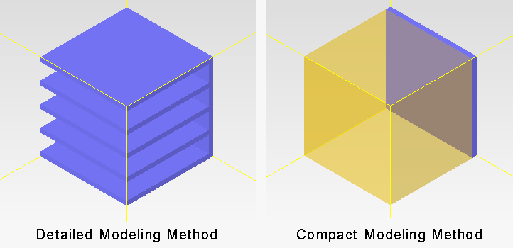

There
are two modeling methods: Detailed and Compact.
Procedure
- Select an assembly in the data tree.
- In the New Object Palette, choose Project Manager
Create or Drawing Board Create and double-click the Heat Sink icon.
- In the Construction tab,
choose a Detailed or Compact modeling level.
A
Detailed model provides the most accurate physical and thermal representation
of the heat sink, generating a large number of grid cells.
A Compact model provides
a thermally equivalent simplified representation. The heat sink
base and fins are replaced by an equivalent overall shape, constructed
from planar and volume resistances for the finned region and a cuboid
for the base. This simplified shape reduces grid cell count and
the solution time.
Results
The default is a Detailed model of an extruded/cast
heat sink with five uniform fins, as shown on the left of Figure 1.
Figure 1. Default Heat Sink SmartPart in
the Drawing Board